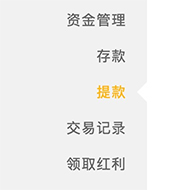

提款流程
提款需知內容
- 銀行帳戶持有人姓名必須與註冊的姓名一致，否則無法申請提款。
- 客戶需經過本網站『實名認證』服務後，才能申請提款。
- 單筆提款金額超過5萬元，會有延遲到帳的情形（此乃各銀行作業問題），請客戶多多留意。
- 客戶需要經過有效投注之後才可以進行提款。比如您存款1000，您買彩100，中500，合計帳戶1500，此時您可以提款的金額為600元。因為您的存款還有900未經投注所以不可全額提款。您的投注額必須超過1000元才能將餘額全部提款。
- 若客戶有參加本網站任何優惠活動時，請詳細閱讀活動內容，在活動未完成時，可能會凍結部分資金，待活動完成後方得申請提款。
- 投注額的刷新需要一定時間。娛樂場投注需要30-60分鐘，體育網站的投注也需要一定時間。
- 每位客戶最多可同時綁定三張提款銀行卡，如需要更換銀行卡，客戶可自行在頁面進行操作。
- 提款最低金額100元，每日的提款金額無上限。
- 客戶需要將資金轉入主帳戶內才可以進行提款。
- 銀行卡需要填寫包括所在省市以及支行在內的所有資訊。
- 需要在半形狀態下進行輸入提款資訊。同時按下Shift 空白鍵可以進行半/全形的切換。半形狀態下輸入顯示123，全形狀態下輸入顯示123。
提款流程
- 進入會員中心後，右側可選擇「提款」按鈕。

- 首次存款前須先完成實名認証。

- 選擇當用卡號或添加新銀行卡進行綁定，輸入提款金額及提款密碼並提交申請。

- 提交資料完後即完成提款申請，請靜待審合完成，我們將盡快為你撥款。